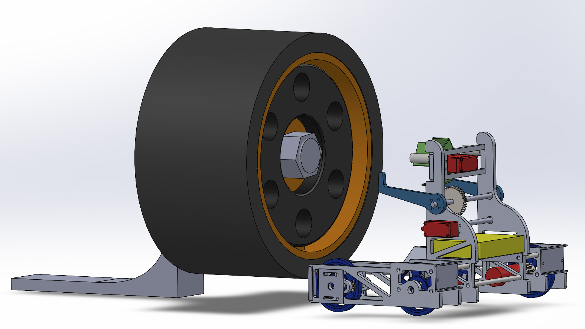
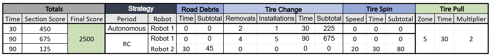
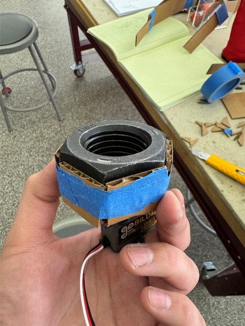
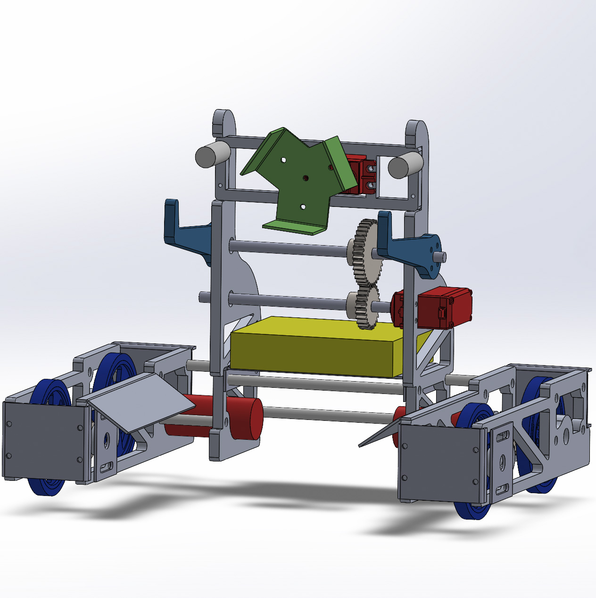

Mechanical Design | Autonomous Control | Robotics
Guido
Guido is a fully-autonomous robot that was able to remove and re-install a 16 lb tire 6 times in under 2 minutes.

Competition Overview
The 2026 MIT 2.007 Design Competition 'F007: Design to Survive' included various point-scoring opportunities inspired by Formula 1.
Guido was designed to complete the tire-changing task, which was one of the most lucrative opportunities for scoring points. The task required that a 16 lb tire fasted by a lug nut be removed and re-installed onto an axle raised 9 inches off of the ground. This task could be repeated indefinitely during the 2-minute competiton to score additional points.

Strategy
The regulations allowed for several robots to operate at once. My strategy, therefore, became to build one remote-controlled robot, Eugene, and a fully autonomous robot, Guido, controlled with the provided Arduino Mega board.
Design Requirements
- Maximum Volume of 12" x 12" x 16"
- Maximum Weight of 12 pounds
- Maximum Stored Energy of 50 kJ
Design Process
- Free-Body Diagrams, Sketches, Cardboard Prototypes
- CAD Renderings or Robot and Competiton Setup
- Hardware Fabrication: Mill, Lathe, Power Tools, and Water Jet
- Develop Autonomous State Machine Program


Testing
First tested with RC operation to troubleshoot robot dimensions, determine adequate motor power output, and balance center of mass.
Afterwards, wrote and troubleshooted autonomous state machine program.
Results
In testing, Guido completed 6 sequential tire removal and re-installations in under 2 minutes.
During the competiton, however, Guido became stuck underneath the tire of the car and was unable to perform a complete "pit stop".
Conclusions
Guido was extremely successful in a controlled testing environment and exceeded my expectations of autonomous operation. However, during manufacturing, I now realize that I made the dimensions too 'perfectly-fitting' to the gameboard setup in the shop, leaving Guido vulnerable to variability in the competiton setup.
Where I to remake Guido, I would consider delving into mechanical compliance or adding suspension to make the robot more adaptable to reasonably-variable differences in the gameboard setup.